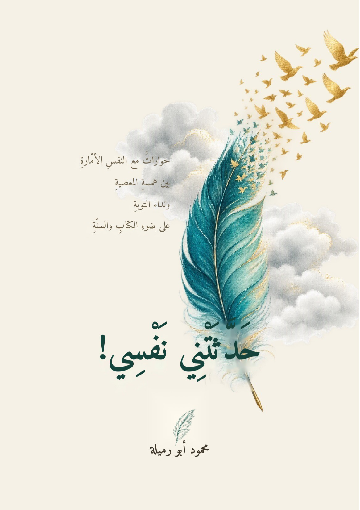

حوارات مع النفس الأمّارة بين همسة المعصية ونداء التوبة، على ضوء الكتاب والسنة
عشرة فصول من الحوار الصادق مع النفس: توسوس بالمعصية، وتؤجل التوبة، وتتثاقل عن الطاعة، وتتباهى بالعمل، وتغتاب الخلق، ويثور غضبها، وتتعلق بالدنيا، وتهزم همتها حين ييأس... ثم تثبت وتعود وتحيا بالله.
احصل على الكتاب الآنرحلة إلى أعماق النفس البشرية؛ نراها توسوس بالمعصية، وتؤجل التوبة، وتتثاقل عن الطاعة، وتتباهى بالعمل وتغتاب الخلق، ويثور غضبها بركانًا، وتتعلق بالدنيا بأذيالها، ثم — بإذن الله — تثبت، وتعود، وتحيا بالله.
يصلك الكتاب على بريدك الإلكتروني مباشرة بعد الدفع 🔒 دفع آمن
«النفس ملك، من ملكها ملك ما ملكه، ومن ملكته ملكها؛ فأرخيتَ لها العنان جرت بك إلى الردى، وإن شددتَ عليها وردت بحوض الفلاح.»
«الشيطانُ كلمةُ «غد»، والتوبةُ كلمةُ «الآن». القلب لا ينتظر ليُتب، بل يُتب لئلا ينتظر.»
«الخطوة الأولى فابدأ إليه؛ فمن مشى إلى الله أسرع الله إليه. العيب ليس في الانتكاسة بعد العودة، العيب في الاستسلام.»